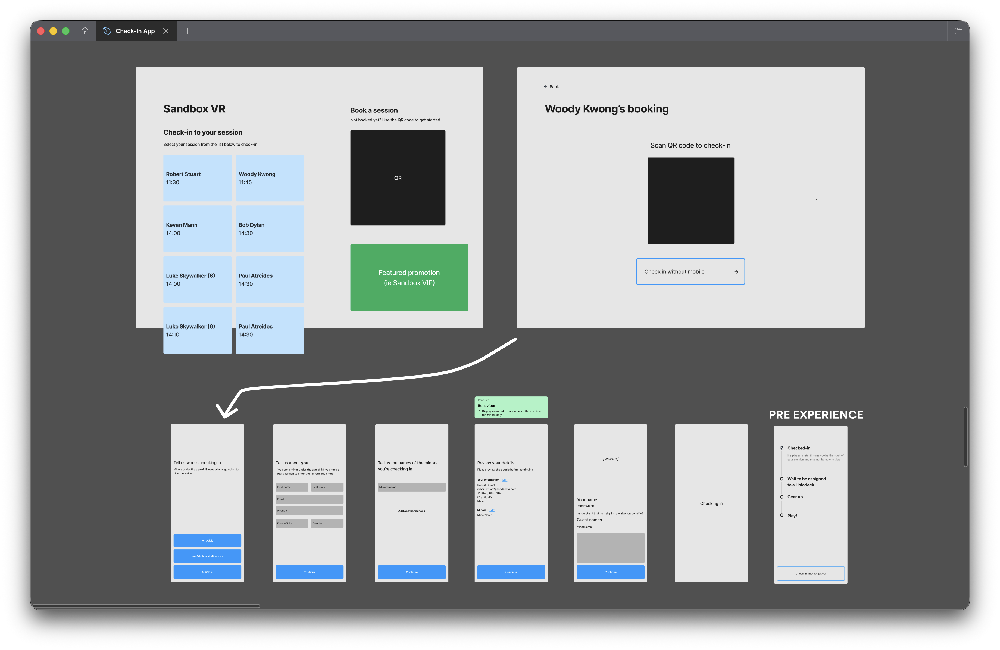
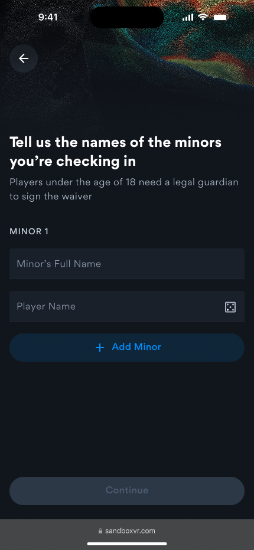
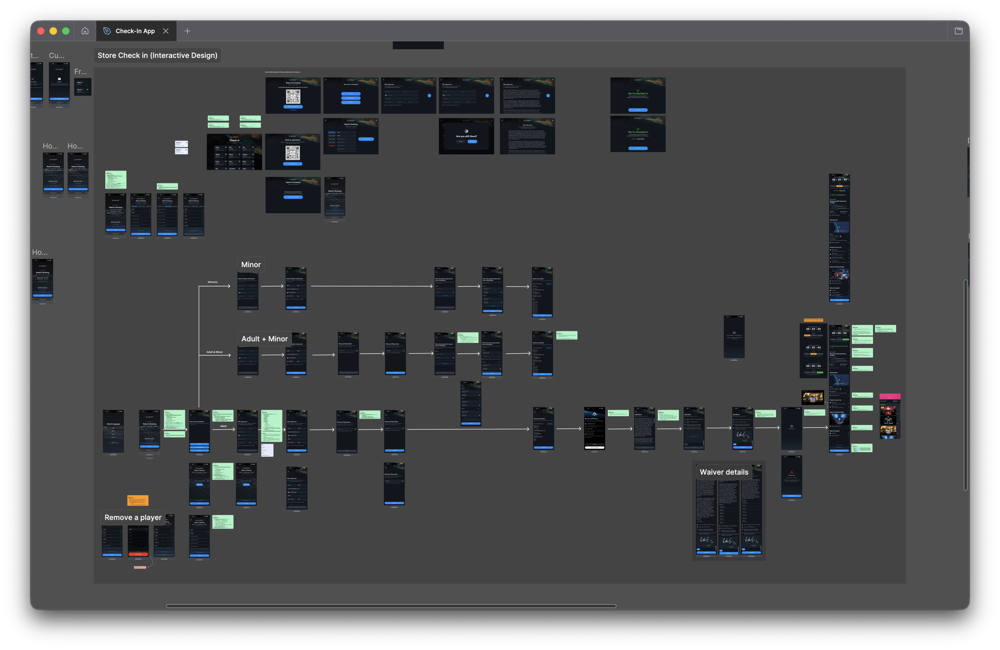

Killing the queue.
How I moved Sandbox VR's check-in off shared kiosks and onto guests' own phones — and shaved up to 50 minutes off a busy group's arrival.
The issue
Every Sandbox VR guest had to check in on a shared iPad kiosk. Enter your name, your email, your date of birth, whether you've played before, if it was anyone's birthday – all on a public device, often with a group of people behind you getting impatient.
For big groups it was a huge bottleneck. For privacy-conscious guests it was an immediate trust wall to climb. And for families with kids, it was a logistical nightmare — minors had a separate flow, which meant separate kiosks, which meant more queuing. Did your kid have an email address? Probably not.
The fix? Use the trusted tech that guests brought with them – their phones.
Three kiosks. No autofill. Everyone queuing.

A common scenario might see a group of ~25 people out for a corporate party or team-building event. With one kiosk, checking in 25 guests could take up to 50 minutes. That's before anyone's even put a headset on.
Beyond the time constraint, there was a trust issue. Handing over personal information on a public shared screen isn't something everyone's comfortable with.
Talking to the people who saw it every day
I started by talking to people — in-store staff who watched the kiosk flow play out every day, internal ops and infra teams who understood the system constraints and the most important stakeholder of all – the paying guest. That gave me a clear picture of where the friction was and what mattered most to fix.
Two priorities came out of that:
- Win trust from the startGuests needed to feel comfortable handing over their details
- Cut check-in timeEspecially for large groups and families with children
From there I mapped the existing flow, looked hard at where steps could be cut or collapsed, and wireframed a leaner version. I used Figma Make and Claude to get a rough POC in front of internal teams quickly before moving to hi-fi, then ran a few rounds of internal user testing and iteration before launching to a selection of test stores.
Check in on your own phone


Out of this testing was born a mobile web app. Guests scan a QR code on the kiosks instead of having to fill in information on a public tablet, or, more preferably, check-in with a link they recieved via email before they arrive and check in on their own phone in their own browser.
Personal info comes first — the booker enters their own details. Most devices allow for auto-fill so even the multiple fields asking names and email address can be quickly completed.
If there are minors in the group, they're added after either the parent or guardian fills in their own information, with them signing the waiver on their own device on behalf of the kids in their party. No separate kiosk flow. No second queue. The goal was one adult able to handle the whole family.
From not checked in to fully ready: 5 steps.
Simple surface, complex underneath

The flow handles three distinct paths — adult only, adult with minors, and minors only — all branching from that first screen. Edge cases are covered too: removing a player, checking-in too many players to one booking, language selection for each player, upselling on future sessions as well as food and beverages. The full flow map gives a sense of how much complexity sits underneath what feels like a simple 5-step process.
Up to 50 minutes back, per group
A single guest took around 2 minutes to get through check-in on the kiosks. Now, everyone checks in simultaneously on their own phone. The whole group is through in under 2 minutes.
That's roughly 50 minutes back for a group of 25. Multiply that across a busy weekend and it's a huge operational shift freeing up staff to help improve the experience elsewhere. Faster throughput, less pressure on staff, and guests arriving at their experience in a better headspace than they would after queuing at a kiosk.
The kiosk is still there as a fallback for guests without a mobile device, but for most guests, they don't need to touch it.